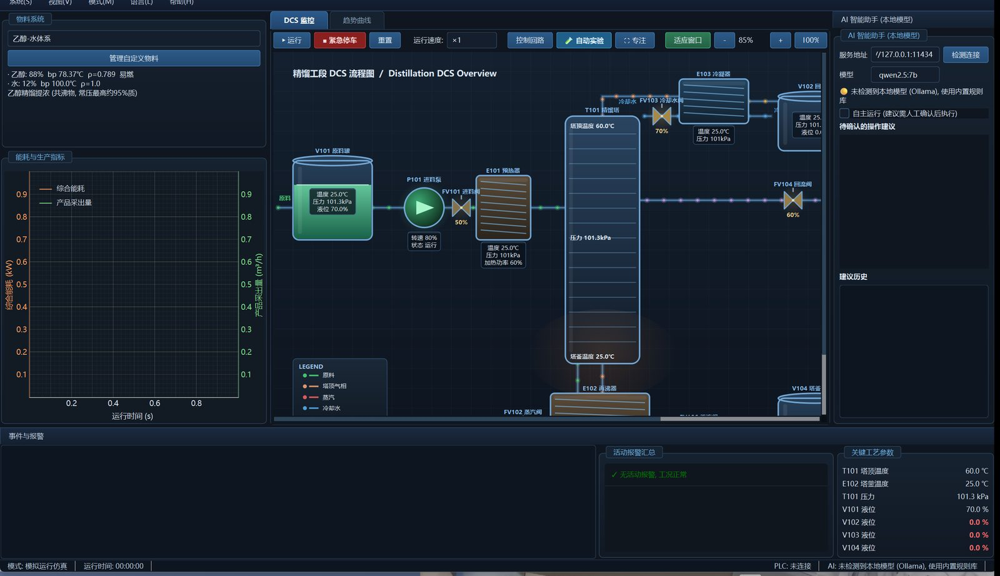

让大模型，安全地走进精馏控制
以乙醇–水精馏装置为对象，通过「三重约束提示 + 确定性方向翻转 + ESD 硬联锁」的分层防线，让本地轻量化大模型以监督者身份安全介入流程工业控制。

安全性，用数字证明
在 31 个典型工况下完成对比验证，方向正确率由 16.1% 提升至 91.4%，错误动作下发为零。
方向正确率对比
一套系统，四种核心能力
面向精馏生产装置，提供仿真、监控、AI 顾问与自动实验的一体化能力，双模式共用同一套界面。
动态工艺仿真
基于乙醇–水体系的动态机理仿真，覆盖 31 个典型工况，逼真还原精馏全过程。
真实 PLC 监控
通过 Snap7 与 S7-1200 实机互联，16 台设备的实时状态尽收眼底。
AI 智能操作顾问
本地轻量化大模型实时解读工况，给出可解释的操作建议，人始终在环。
自动化实验采集
一键批量运行实验工况，自动采集、记录与导出数据。
一步步改进，直到安全可控
从"直接下指令"到"分层防线"，方向正确率由 16.1% 提升到 91.4%。
让大模型直接下指令
未经约束的大模型直接输出控制动作，方向正确率仅 16.1%，安全风险不可控。
用提示工程框住输出
以角色、知识、安全三重约束框定每一次输出，把回答限制在工艺允许范围之内。
对方向做确定性校验
对模型给出的控制方向做确定性校验，25 个方向错误样本全部纠正。
物理层兜底
双层紧急停车独立于软件运行，即便 AI 失效，硬件层仍能第一时间保护装置。
安全，可用，可控
方向正确率 91.4%，错误动作下发 0，大模型以监督者身份安全介入精馏控制。
四层协同，层层设防
从交互层到设备层，每一层职责清晰、边界明确，共同构成一套完整的闭环控制系统。
桌面应用界面，双模式一键切换，操作员与工程师共用一套视图。
PySide6仿真引擎、PLC 通信、AI 顾问与自动实验四大核心业务模块。
Python 3.10本地轻量化大模型推理，无云端依赖，数据不出厂。
Ollama · qwen2.5:7bS7-1200 PLC 与精馏装置实机互联，Snap7 协议通信。
Snap7 · S7-1200跑在本地，数据不出厂
无云端依赖，任意工厂、实验室都能本地运行，工艺数据始终留在厂区。
获取 Aterl-DistSim
源码与安装包全部开放，遵循 Apache-2.0 许可，免费使用，无任何商业行为。
问题反馈与交流
本项目为开源学习项目，欢迎在 GitHub 仓库提交 Issue 交流。